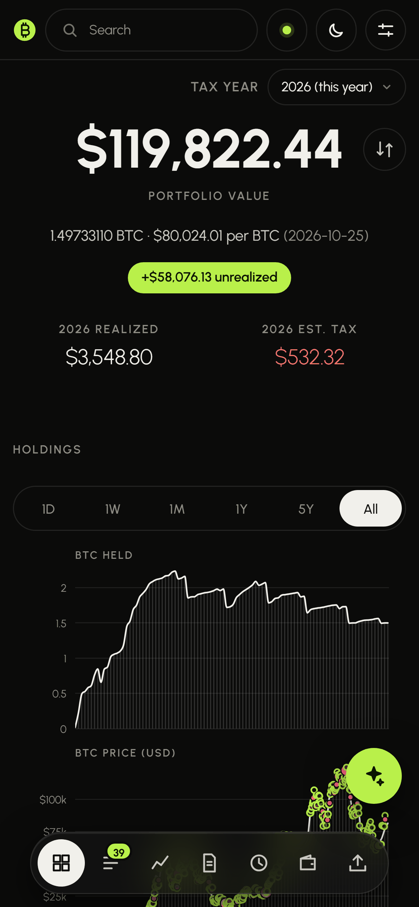
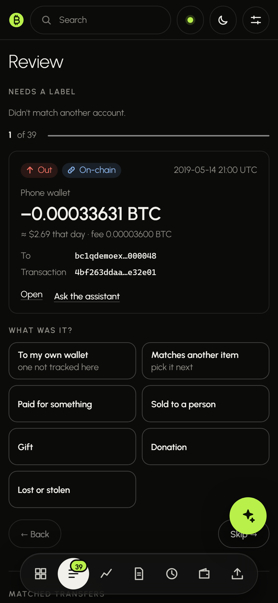
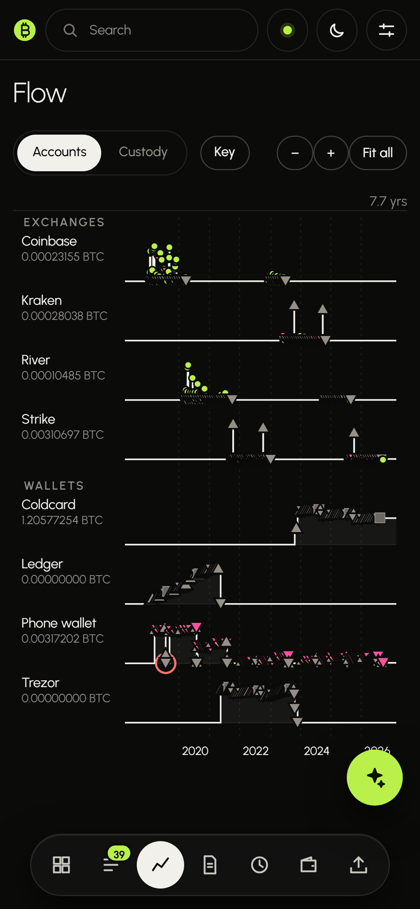
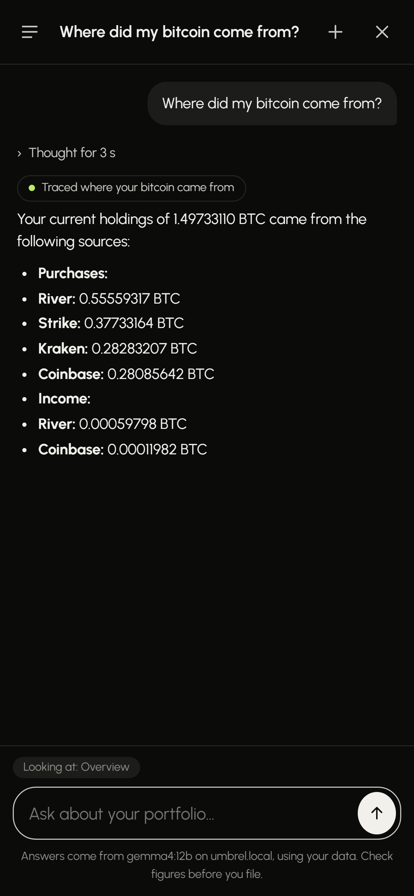

Track every coin
Buys on an exchange, withdrawals to cold storage, spends from a hot wallet, sales back on an exchange: linked up, so every sale knows which purchase it came from.
Self-hosted · open source · MIT
Drop in every exchange export, connect your real wallets, and it works out where every coin came from and where it went. Then it hands your accountant one tidy package, and answers your questions with AI that runs on your own hardware.
Runs on Umbrel · StartOS · Docker




Your coins hop between exchanges and wallets. Proof of Basis follows each one, so every sale is matched to the purchases it really came from.
Sales use each wallet's oldest coins first (FIFO), the app's default.
Buys on an exchange, withdrawals to cold storage, spends from a hot wallet, sales back on an exchange: linked up, so every sale knows which purchase it came from.
Five guided steps from "is everything here?" to one download for your tax professional, with each exchange's 1099-DA checked against your own records.
An optional assistant on your own Ollama looks things up, charts them and proposes fixes you apply with one tap. Every change can be undone.
One file on your own machine. It talks to your node, never phones home, and the accountant package leaves out addresses unless you ask.
Install it from the Umbrel community store or as a StartOS package, and it finds your node's Electrum server on its own.
* Untangling and tracing work wherever you live. The tax side (Form 8949, 1099-DA checks, the accountant package) follows United States rules, in US dollars.
We made our own benchmark to test these models locally on common hardware.
Best overall
The most correct answers of any model we tried, in 4.5 GB of video memory. About 6 seconds an answer.
ollama pull qwen3.5:4bFastest
The quickest of the models that score over 92%: a typical answer in 5.4 seconds and a 94.1% score, in 4.3 GB.
ollama pull bonsai-2:9bSmallest
Runs in 2.8 GB of video memory, the least of any model here, and still scores 90.1%, in about 3 seconds.
ollama pull bonsai-2:4bRecommended
Run on an RTX 4070 (12 GB) with Ollama. Methodology and full results
Pick where you run it. Each install asks you to set a password the first time you open it.
https://github.com/DeGrandis/proof-of-basis-umbrelhttp://ollama_ollama_1:11434x86_64 for Intel or AMD, aarch64 for ARM.For StartOS 0.4. The Node Services and Reset Password actions are on the service's page.
docker run -d --name proof-of-basis -p 8080:8080 -v pob-data:/data --restart unless-stopped ghcr.io/degrandis/proof-of-basis:latesthttp://<this computer>:8080 and set a password.Or build it yourself with docker compose up -d --build from the repository.
No sign-up and nothing to set up. Walk through a tax year, follow a coin across wallets in Flow, or ask the assistant where a sale's coins came from.
Open the demo